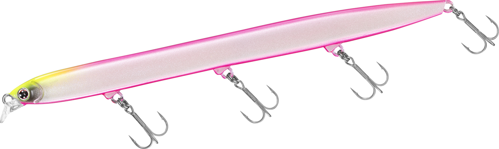
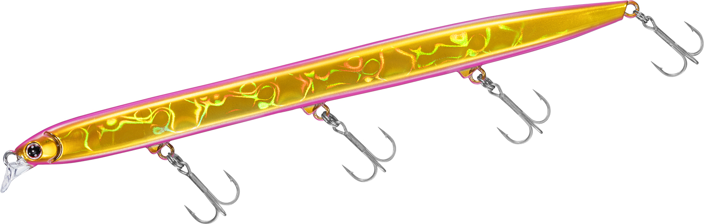
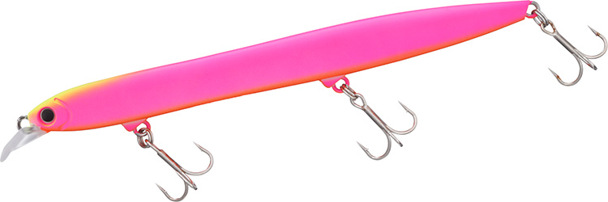
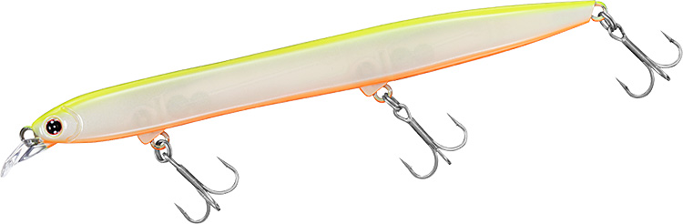

モアザン ヒソカ150F-SSR
（MORETHAN HISOKA 150F-SSR）
モアザン ヒソカ150F-SSRは、ダイワのシーバスブランド「モアザン」の、小沼正弥さん監修のシャローランナーです。
キャッチコピーは「密かに爆れ」。I字系プラグをそのままシャローランナーにしたような極細シルエットで、バチ・サヨリ・シラスなど細いベイトに偏食した激スレのシーバスを、水面直下で攻略できるのが最大の特徴です。150F-SSRはシリーズ最大のサイズです。

画像出典:DAIWA公式HP
スペック
- メーカー
- DAIWA（ダイワ）
- タイプ
- シャローランナー（スローフローティング）
- 全長
- 150mm
- 重さ
- 11.9g
- 有効レンジ
- 水面直下〜約0.3m
- アクション
- タイトウォブンロール＋テールスライド
- フック
- #12トレブル
- リング
- #2
- 推奨リーダー
- 16LB以下
- 監修
- 小沼正弥
- カラー
- 全12色
- ターゲット
- シーバス
- 価格
- メーカー希望本体価格2,200円（税別）
▼今すぐチェック

モアザン ヒソカ150F-SSRの特徴
密かに爆れ。極細シルエットの水面直下攻略型シャローランナー
-
バチに合わせた極細シルエット
I字系プラグをそのままシャローランナーにしたような極細ボディ。バチ・サヨリ・シラスはもちろん、イワシや稚アユなど小さなベイトのパターンにも合う。
-
低速から高速まで泳ぐアクション
レスポンスが高くスレに強いタイトウォブンロールに、テールスライドを加えたアクション。ゆっくり巻いても速く巻いても泳ぎ、ロッドの角度と巻く速さで水面直下〜約30cmを引ける。
-
磁着W重心移動で飛距離も出る
極細ボディながら、磁石で固定する重心移動を前後にダブルで搭載。「スリムミノーは飛ばない」イメージをくつがえす飛距離と、着水後のアクションの立ち上がりを両立している。
モアザン ヒソカ150F-SSRの使い方
ただ巻きで使うのが基本です。ロッドを立てれば水面直下、寝かせれば約30cmと、ロッドの角度と巻く速さを組み合わせてレンジを合わせるのがコツです。
ゆっくり巻けばタイトなロール、少し速めに巻けばテールスライドも加わるので、ベイトの動きやシーバスの反応を見ながら巻く速さを変えていきましょう。
モアザン ヒソカ150F-SSRの得意な状況
バチ抜けや、サヨリ・シラスなど細いベイトの時期の河川・河口・港湾で出番です。
ダイワも「ヒソカシリーズはバチ抜け攻略に特にオススメ。やや波立った状況でも使いやすく、水面直下を引きたいときに重宝する」としています。風や波でI字系のスリムプラグが太刀打ちできない日でも、一枚下のレンジでしっかりアピールできるのが強みで、激スレのシーバスが釣れる1本です。
ワンポイント
水面がざわついてI字系プラグがうまく泳がない日は、ヒソカに替えて、ロッドを少し寝かせて水面から一枚下のレンジを通すのがおすすめです。シルエットは細いまま、波の影響を受けにくいレンジで見せられます。
ヒソカシリーズの使い分け
| モデル | 全長／ |
アクション | 価格 |
|---|---|---|---|
| ヒソカ95F-SSR | 95mm／ |
タイトウォブンロール | 1,900円 |
| ヒソカ120F-SSR | 120mm／ |
タイトウォブンロール＋テールスライド | 2,000円 |
| ヒソカ150F-SSR | 150mm／ |
タイトウォブンロール＋テールスライド |
2,200円 |
どれもスローフローティングで、有効レンジは水面直下〜約0.3m、推奨リーダーは16LB以下です（DAIWA公式HPの記載より）。小さなバチや港湾には95、基本は120、大きめのバチや広い河川で飛距離が欲しいときは150と、ベイトの大きさで選びましょう。
人気カラー
モアザン ヒソカ150F-SSRの人気カラーを紹介します。
 ピンクサンドバチパール
ピンクサンドバチパール
パール系のボディにピンクを合わせたバチカラー。バチ抜けの定番に。

ピンクサンドゴールドゴールドにピンクを合わせたカラー。光を反射させてアピールしたい時に。

マットバチピンクマットなピンクのバチカラー。夜でもシルエットを出しやすい。

チャートバックパールチャートの背にパールのお腹。濁りの日やローライトに。
※マットバチピンク・チャートバックパールの画像は120F-SSRです（カラーは150F-SSRにもあります）。
画像出典:DAIWA公式HP
▼今すぐチェック
モアザン ヒソカ150F-SSRに似ているルアー
-
 ノーテン150
マルジン
詳細はこちら＞
ノーテン150
マルジン
詳細はこちら＞
同じ150mmのワーム系スティックベイト。漂う動きで見せたい時に。
-
 ノーテン150ゼロ
マルジン
詳細はこちら＞
ノーテン150ゼロ
マルジン
詳細はこちら＞
150mmのフローティングワーム。巻かずに流れに乗せたい時に。
-
 ヘディサイト フレックス160
Mi3
詳細はこちら＞
ヘディサイト フレックス160
Mi3
詳細はこちら＞
160mmのスローシンキングペンシル。デッドスローで引きたい時に。